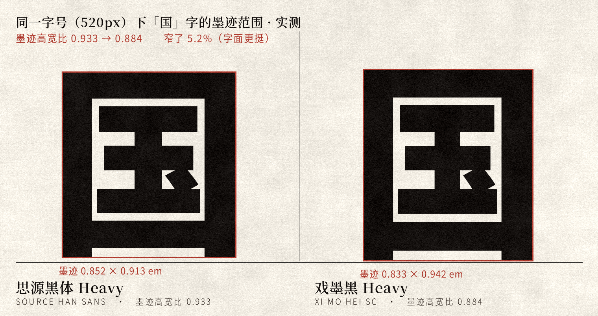
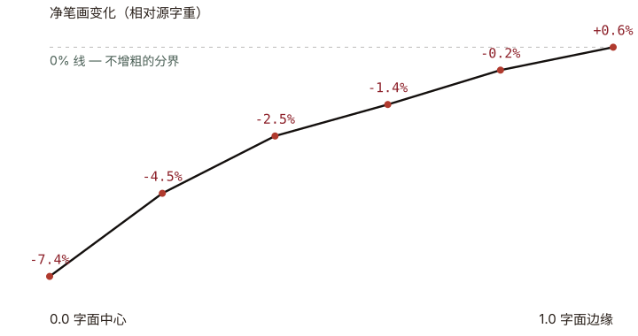
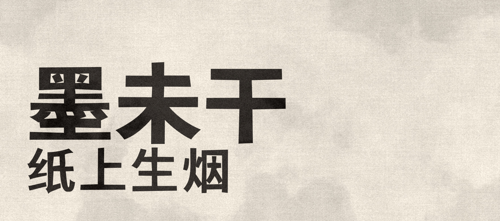

它是什么
WHAT IT IS思源黑体的轮廓早已合并——一个「十」字只有一条闭合轮廓，横竖笔画焊成一体， 因此无法按单条笔画加粗减细。戏墨黑的全部改造，通过全局坐标变形完成， 只有四个旋钮。
汉字设计的核心杠杆是中宫。思源黑体带日文字体基因，中宫偏松，字显得散。 戏墨黑把中宫收紧，并把字面收窄拉高——这一条是它最重要的识别特征。
变形严格限定为 x′=f(x)、y′=g(y)，两者不交叉。这不是审美选择，
而是 Type 2 charstring 编码正确性的硬约束：hlineto、hvcurveto
这些算子带隐式坐标，靠"相等"成立；可分离变形保证相等性不被破坏。

局部缩放率建模，笔画只渐变变细，绝不增粗。
由源字体的 0.992 收窄，成为略窄挺的黑体。
向边缘单调回升到 +0.6%，无超调。
六个字重逐字形绘制并重编译，零失败。

六个字重
SIX WEIGHTS拖动滑块看字面在不同字号下的表现。下面这六行是真正的字体文件，不是图片。
戏墨黑 一蓑烟雨任平生
戏墨黑 一蓑烟雨任平生
戏墨黑 一蓑烟雨任平生
戏墨黑 一蓑烟雨任平生
戏墨黑 一蓑烟雨任平生
戏墨黑 一蓑烟雨任平生
水墨标题体
INK DISPLAY墨未干
纸上生烟
Xi Mo Hei Ink SC · 浓 / 重 两个字重

水墨位移需要 16–20 单位才在大字号下可见。Regular 的竖画只有约 55 单位， 位移会直接压穿笔画——水墨字本就该用重墨写成，所以它只从 Bold / Heavy 派生。
两级变换叠在文本字体之上：方向性笔画对比（横细竖粗，实测对比度由 1.000 提升到约 1.6）、 水渍边缘（二维值噪声沿法线偏移轮廓）。
噪声波长必须与笔画宽度同量级（40–60 单位）。早期用 95–115， 笔画两侧取到几乎相同的噪声值，只是整体晃动——看起来像隔水看字的热浪， 而不是渗化。
字体只能编码形状，不能编码色调
水渍那圈深浅不匀的渍痕，是墨水浓度在纸纤维上干燥后的渐变——属于栅格信息。 OpenType 的轮廓里没有灰阶。
所以完整的水墨效果需要两层：字形层提供不规则的边缘， 纹理层（PNG，正片叠底）提供深浅与晕染。
姊妹字体 · 戏墨宋
XI MO SONG SC同一套变形引擎，用在宋体上要少一个旋钮。黑体是等线，加笔画对比是增益； 宋体本身就有强烈的横细竖粗，再叠加对比会把横画削成发丝，结构直接塌掉。
实测：思源宋体 Regular 的「一」字，横画本体只有 33 单位 厚， 两端三角衬线却把它撑到 116 单位高。作为对照，思源黑体 Heavy 的竖画厚约 150 单位。 所以宋体版不接笔画对比，只做中宫收紧与字面调整。
水墨版的振幅也不同
黑体水墨的位移由竖画决定，宋体则由横画决定——整体比黑体小一档。 逐点限幅让粗的竖画仍可承受较大位移，细横画自动受保护。
源码里保留了反面记录：实验台的「宋_加对比_错」候选， 可以清楚看到横画被削成发丝、结构塌掉的样子。
戏墨宋 一蓑烟雨任平生
戏墨宋 一蓑烟雨任平生
戏墨宋 一蓑烟雨任平生
戏墨宋 一蓑烟雨任平生
竖排
VERTICAL SETTING竹杖芒鞋轻胜马
定风波 · 苏轼
莫听穿林打叶声，何妨吟啸且徐行。竹杖芒鞋轻胜马，谁怕？一蓑烟雨任平生。
试写
TYPE TESTER戏墨黑 免费商用 六字重
正在按需载入 GB2312 完整字库（约 3.2 MB）——载入前显示的是页面子集。
规格与授权
SPECS & LICENSE| 字形总数 | 65,535 / 字重 |
|---|---|
| cmap 字符 | 44,812 |
| 基本区汉字 | 20,976（含扩展 A 区） |
| 拉丁 / 注音 / 假名 / 谚文 | 全套 |
| 桌面格式 | OTF（CFF），约 16.5 MB / 字重 |
| 网页格式 | WOFF2，GB2312 子集 7,690 字符，约 3.2 MB |
| 竖排 | vhea / vmtx 完整保留 |
| 授权 | SIL Open Font License 1.1 |
你可以 / 不可以
- 免费用于任何场景，包括商业用途
- 自由分发、嵌入、修改
- 修改后分发（衍生字体须同样以 OFL 发布并改名）
- 单独售卖字体文件本身
- 在衍生字体中使用保留字体名
- 以 Adobe 名义做宣传背书
保留字体名：Xi Mo Hei · Xi Mo Hei SC ·
戏墨黑 · 戏墨黑 SC